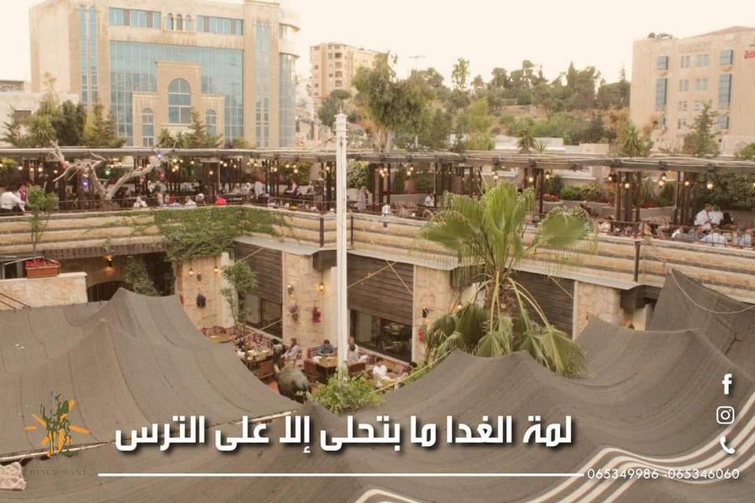
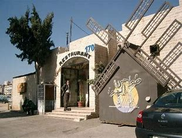
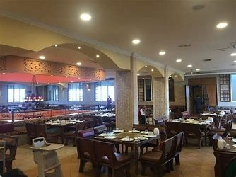

Tawaheen Alhawa Restaurant
  Tawaheen Al-Hawa, located on Wasfi al-Tal Road in Amman, Jordan, is renowned for its delicious Lebanese, Mediterranean, and Middle Eastern cuisine, offering a variety of dishes including vegetarian, vegan, and gluten-free options. The restaurant is famous for its Mansaf, a traditional Jordanian dish made with lamb, rice, and jameed. With a welcoming atmosphere featuring both indoor and outdoor seating, it’s an ideal spot for family gatherings, friends’ meetups, or romantic dinners. The service is excellent, with friendly and attentive staff, and amenities like takeout, reservations, private dining, and valet parking. Open daily from 12:00 PM to 11:59 PM, Tawaheen Al-Hawa ensures a memorable dining experience for all its guests.
about page